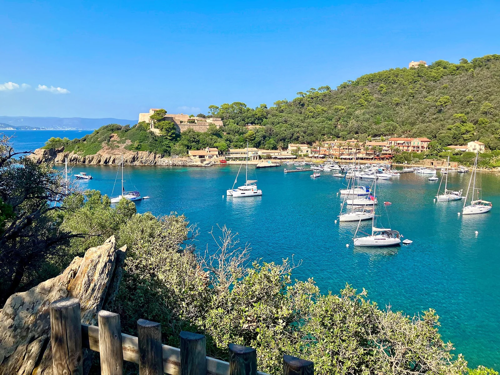

Port-Cros
Var, France · plongée, snorkeling, baignade

Premier parc national marin d’Europe : un sentier sous-marin balisé fait découvrir herbiers et poissons en snorkeling.
- Lieu
- Var, France
- Niveau
- Débutant
- Activités
- plongée, snorkeling, baignade
- Type d'eau
- Mer / océan
- Coordonnées
- 43.01, 6.39 (position approximative du secteur)
Dangers à connaître
- Zones de mouillage réglementées.
- Herbiers de posidonie protégés.
Le conseil d'Ocean Buddy
Suis le sentier sous-marin depuis la plage de la Palud.
Ouvrir dans Ocean Buddy Télécharger sur l'App Store
Source : Description historique Ocean Buddy · vérification externe en attente.